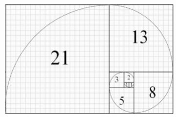
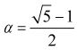
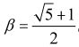
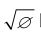
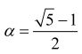
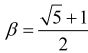

1.第一个月初有一对刚出生的兔子；
2.二个月后（也就是第三个月初）这对兔子可以生育一对兔子；
3.以后每个月每一对可生育的兔子都会生下一对新兔子；
4.兔子永远不死。
假设在第n个月共有a对兔子，第n+1月共有b对，那么在第n+2月必定共有a+b对，因为第n+2月的时候，前一月（n+1月）的b对兔子可以存留到第n+2月（当月新生的兔子还不能生育），而在n月就已存在的a对兔子又生下a对兔子来。这个关系可以用下面的式子来表达：
Fn+2=Fn+Fn+1。（n≥1）
规定F0=0，于是我们得到这么一个看起来似乎没有什么规则的数列：
0，1，1，2，3，5，8，13，21，34，55，89，144……
数学史专家告诉我们，实际上在列奥纳多发现这个数列之前半个世纪，印度数学家金月（Acharya Hemachandra，约公元1088—约公元1173）研究了一个跟兔子毫不相干的问题：在码放货物的时候，如果有很多不同大小、底面为正方形的箱子，其大小最接近的两种箱子的边长比例在1和2之间，怎样码放最节省空间？金月发现，最佳码放方式就是现在称为斐波那契数列的形式，如图31所示。

图 31：把边长遵循斐波那契数列规则的方块摆在一起，总是构成长方形。在 n 变得很大时，这个矩形的长与宽之比趋近于黄金分割率 1.618……
这是一个等比数列，满足这样的关系：
Fn + α Fn-1 = β(Fn-1 + α Fn-2)（n>2）
这里，

，
。换句话说，Fn+ α Fn-1跟(Fn-1 + α Fn-2)构成等比数列。这个等比数列的比值β =1.618……。这是个非常有名的比值，称为黄金比值。人们一般用希腊字母Φ来表示它，而α也跟Φ有关系：α=1/Φ。Φ满足一个特殊的一元二次方程：Φ+1=Φ2。这个方程隐含着一种特殊的直角三角形：根据勾股定理，底边长度为1、高为

的直角三角形的斜边是Φ。这样的三角形被称为开普勒三角形，是17世纪德国著名数学家、天文学家开普勒（Johannes Kepler，公元1571—公元1630）发现的。可是你知道吗？古埃及很多金字塔都是按照这个比值建造的。著名的吉萨大金字塔，其斜面边长和底面半边长的比值Φ跟相差不到0.01%。这是巧合吗？还是古埃及人早已知道黄金分割率了？开普勒还发现，斐波那契数列中相邻两个数的比值 Fn+1/Fn在n很大的时候，也趋近于黄金比值Φ=1.618……。另外这个数列似乎有无穷多个质数。比如：2、3、5、13、89、233、1597、28 657、514 229、433 494 437、2 971 215 073、99 194 853 094 755 497、1 066 340 417 491 710 595 814 572 169、19 134 702 400 093 278 081 449 423 917，等等。目前已知最大的斐波那契质数是第81 839个斐波那契数，该质数一共有17 103位数字。
如果按照金月的办法码放方块，当n变得无穷大的时候，所有箱子构成的矩形的边长之比也趋近于黄金分割率1.618……。所以，斐波那契数列又称为黄金分割数列。如果从每一个方块的一角用方块的边长为半径画四分之一个圆，所有的圆弧连起来就成为一条螺线（图31）。这条螺线有一个非常迷人的特征，那就是只要n>2，它的形状跟大小无关。换句话说，它是自我相似的。这是因为Fn + αFn-1 跟(Fn-1 + αFn-2)构成等比数列。而几何上的自我相似性常常隐含了某种自我相似的物理过程。
实际上，自然界里许多生物的构造都和斐波那契数列有相关性。比如，典型的DNA构造是两根相互交缠呈螺旋状的分子链，每旋转360度，分子链螺旋的长度同两根螺旋的间距之比等于黄金率。向日葵里的葵花籽是按照螺旋式排列的，有人说99%的排列方式都遵循；菠萝、松塔、仙人掌等很多植物的螺旋线，也都遵循斐波那契螺线。还有数量惊人的物理过程也遵从斐波那契螺线，从微小的分子到巨大的星系，尺度从10-10米到若干亿光年（1光年大约是1019米）！这是不是很神奇？现在斐波那契数列还被用来分析股市的波动。
神圣的比值（注：指斐波那契黄金分割率）犹如上帝，永远自我相似。
卢卡·帕西奥利（Luca Pacioli，公元1447—公元1517，意大利数学家）
几何学有两大瑰宝。一个是毕达哥拉斯定理（注：即勾股定理），另一个就是把线段分割成极端与平均的比值（注：指斐波那契黄金分割率）。前者可比之为黄金，后者则可比之为宝石。
约翰尼斯·开普勒
必须先在思维中独立地建立起形式来，然后才能在事物中发现它们。
阿尔伯特·爱因斯坦（Albert Einstein，公元1879—公元1955）
你来试试看？本章趣味数学题：
1.利用“铺地锦”计算238×13。它是不是比古埃及乘法便捷多了？
2.验证1+（22+（7+（42+（33+（4+40/60）/60）/60）/60）/60）/60=1.3 688 081……。
3.你能推导出斐波那契等比数列的比值β吗？
4.验证Φ+1=Φ2的解就是

和
。5.胡夫金字塔的底面是边长为230.4米的正方形，金字塔的高为146.5米。根据这两个数字计算金字塔斜面的长度。从这个长度计算斜面边长同底面边长一半的比值。